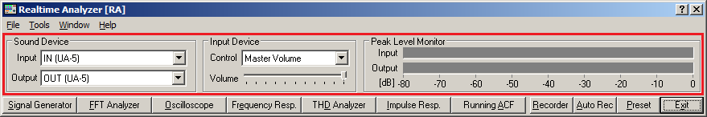

DSSF3 > RA > Reference Manual > Main Window

| Item | Description |
|---|---|
| Sound device | |
| Input | Sound device for input is specified. |
| Output | Sound device for output is specified. |
| Input Device | |
| Control | Selection of an input device. It is same as the Windows volume control. Available input device for the sound card used is displayed (e.g. Microphone, Line-in, CD, WAVE, Mixer). When measuring digital signal, choose WAVE or Mixer (this name depends on your computer or sound driver). |
| Volume | Adjustment of the input signal volume. Normally, the peak level should be below -5 dB for preventing the distortion. |
| Peak Level Monitor | |
| Input | Peak level monitor of an input signal. |
| Output | Peak level monitor of an output signal. This level can be adjusted only by the digital volume in signal generator. When playing wav files (in the Recorder, Running ACF or the Impulse response), peak level of that file is displayed in real time. |
DSSF3 > RA > Reference Manual > Main Window